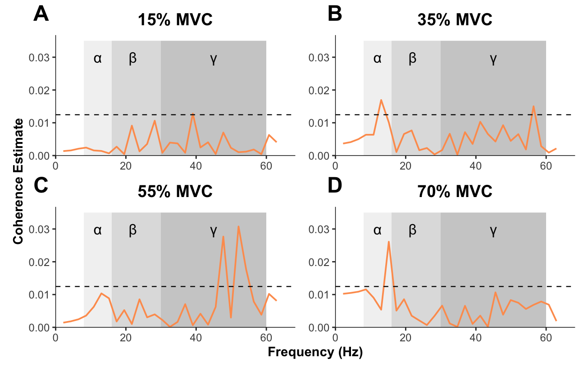
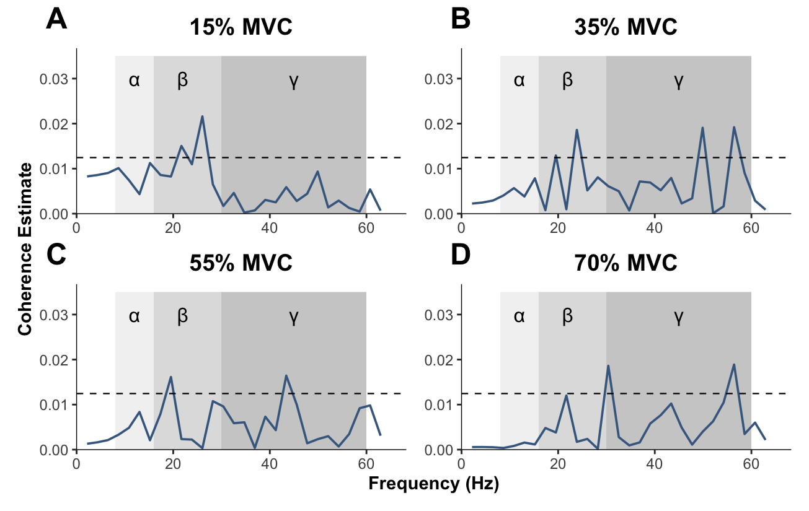
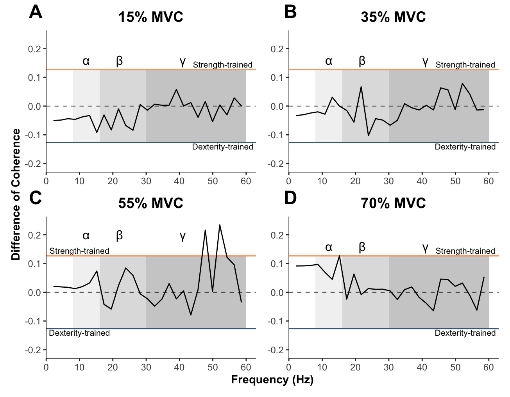

# install.packages("tidyverse")
# install.packages("patchwork")
# install.packages("ggtext")
# install.packages("kableExtra")
# install.packages("svglite")Plotting of Intermuscular Coherence Analysis
Initialise and Input Data.
Install dependencies if needed.
Load required packages.
library(tidyverse)
library(patchwork)
library(ggtext)
library(kableExtra)
library(svglite)Specify source of required helper functions:
source("coherence_plots_utils.R")Load the data files for plotting:
- These are the pooled_coherence_data.csv and comparison_of_coherence_data.csv file, which has been output from the process_mu_data.m function.
pooled_coherence_data <- read_csv("pooled_coherence_data.csv", show_col_types = FALSE)
comparison_of_coherence_data <- read_csv("comparison_of_coherence_data.csv", show_col_types = FALSE)
glimpse(pooled_coherence_data, 1)Rows: 512
Columns: 17
$ freq <dbl> …
$ strength_coh_15 <dbl> …
$ strength_ci_15 <dbl> …
$ strength_coh_35 <dbl> …
$ strength_ci_35 <dbl> …
$ strength_coh_55 <dbl> …
$ strength_ci_55 <dbl> …
$ strength_coh_70 <dbl> …
$ strength_ci_70 <dbl> …
$ dexterity_coh_15 <dbl> …
$ dexterity_ci_15 <dbl> …
$ dexterity_coh_35 <dbl> …
$ dexterity_ci_35 <dbl> …
$ dexterity_coh_55 <dbl> …
$ dexterity_ci_55 <dbl> …
$ dexterity_coh_70 <dbl> …
$ dexterity_ci_70 <dbl> …glimpse(comparison_of_coherence_data, 1)Rows: 512
Columns: 9
$ freq <dbl> …
$ compcoh_15 <dbl> …
$ ci_15 <dbl> …
$ compcoh_35 <dbl> …
$ ci_35 <dbl> …
$ compcoh_55 <dbl> …
$ ci_55 <dbl> …
$ compcoh_70 <dbl> …
$ ci_70 <dbl> …Plotting the Pooled Coherence Results
Plotting NeuroSpec-style pooled coherence plots based on the outputs of the NeuroSpec toolbox’s “sp2a2.m1” Type 0 routine with pooling of participant and group.
Show function for plotting
# FUNCTION: create_pooled_coherence_plots
# Creates NeuroSpec-style plots for pooled coherence estimates.
# Inputs:
# - data: "pooled_coherence_data.csv".
# - testing_group: either "strength" or "dexterity" for testing group.
# - force_level: 15, 35, 55 or 70. This is the MVC level for each submaximal test.
# Outputs:
# - Pooled coherence plot for a given group and force level.
create_pooled_coherence_plots <- function(data, testing_group, force_level) {
# Construct column names dynamically
coh_col <- paste0(testing_group, "_coh_", force_level)
ci_col <- paste0(testing_group, "_ci_", force_level)
# Create the plot using modern tidy evaluation
p <- ggplot(data, aes(x = freq)) +
# Add shaded frequency bands
annotate("rect", xmin = 8, xmax = 16, ymin = 0, ymax = 0.035,
fill = "grey90", alpha = 0.5) +
annotate("rect", xmin = 16, xmax = 30, ymin = 0, ymax = 0.035,
fill = "grey75", alpha = 0.5) +
annotate("rect", xmin = 30, xmax = 60, ymin = 0, ymax = 0.035,
fill = "grey60", alpha = 0.5) +
# Add symbols
annotate("text", x = 12, y = 0.03, label = "\u03B1", size = 12/.pt) +
annotate("text", x = 22, y = 0.03, label = "\u03B2", size = 12/.pt) +
annotate("text", x = 45, y = 0.03, label = "\u03B3", size = 12/.pt) +
# Add coherence line with color
geom_line(aes(y = .data[[coh_col]], color = testing_group), linewidth = 0.65) +
# Add confidence interval as dashed line
geom_hline(yintercept = data[[ci_col]][1], linetype = "dashed", linewidth = 0.4) +
# Set axis limits and breaks with explicit names
scale_x_continuous(
limits = c(0, 65),
name = "Frequency (Hz)",
expand = expansion(mult = c(0, 0.05)) # This removes the gap at the bottom
) +
scale_y_continuous(
limits = c(0, 0.035),
breaks = c(0, 0.01, 0.02, 0.03),
name = "Coherence Estimate",
expand = expansion(mult = c(0, 0.05)) # This removes the gap at the bottom
) +
# Add color scale
scale_color_manual(
values = c("strength" = "#fe9d5d", "dexterity" = "#456990"),
labels = c("strength" = "Strength-Trained", "dexterity" = "Dexterity-Trained")
) +
# Title only in labs (no x/y labels here)
labs(title = paste0(force_level, "% MVC")) +
# Modified theme
theme_bw() +
theme(
panel.grid = element_blank(),
plot.title = element_text(hjust = 0.5, size = 14, face = "bold"),
legend.position = "none",
panel.border = element_blank(),
axis.line.x = element_line(linewidth = 0.25, linetype = "solid", colour = "black"),
axis.line.y = element_line(linewidth = 0.25, linetype = "solid", colour = "black"),
axis.title = element_text(size = 11, face = "bold"),
axis.text = element_text(size = 9)
)
return(p)
}Strength-trained plotting
Creating individual plots for each force level in the strength-trained group.
force_levels <- c("15", "35", "55", "70")
strength_plots <- map(force_levels,
~create_pooled_coherence_plots(pooled_coherence_data, "strength", .x)) %>%
setNames(paste0("strength_", force_levels, "_plot"))Combining plots for each force level using the patchwork library.
strength_plot <- (strength_plots$strength_15_plot +
strength_plots$strength_35_plot +
strength_plots$strength_55_plot +
strength_plots$strength_70_plot) +
plot_layout(axis_titles = "collect") +
plot_annotation(tag_levels = "A") &
theme(plot.tag.position = c(0.1, 1),
plot.tag = element_text(size = 18, face = "bold"))
strength_plot
Dexterity-trained plotting
Creating individual plots for each force level in the dexterity-trained group.
force_levels <- c("15", "35", "55", "70")
dexterity_plots <- map(force_levels,
~create_pooled_coherence_plots(pooled_coherence_data, "dexterity", .x)) %>%
setNames(paste0("dexterity_", force_levels, "_plot"))Combining plots for each force level using the patchwork library.
dexterity_plot <- (dexterity_plots$dexterity_15_plot +
dexterity_plots$dexterity_35_plot +
dexterity_plots$dexterity_55_plot +
dexterity_plots$dexterity_70_plot) +
plot_layout(axis_titles = "collect") +
plot_annotation(tag_levels = "A") &
theme(plot.tag.position = c(0.1, 1),
plot.tag = element_text(size = 18, face = "bold"))
dexterity_plot
Tabulate significant pooled coherence frequencies
Show function to get all coherence frequencies which cross the CL or CI
# FUNCTION: compare_with_ci
# Creates tables of significant frequencies based on the coherence and comparison of coherence
# confidence limits and confidence intervals from the Neurospec Toolbox.
# Inputs:
# - data: "pooled_coherence_data" or comparison_of_coherence_data.csv".
# - freq_limit: Limit for frequencies of interest. Here = 60, as this is the end of the Gamma Band.
# - ci: if TRUE, will allow for confidence intervals (ie values negative but >CI) are still classified
# as significant. Default = FALSE.
# Outputs:
# - Table of significant frequencies.
compare_with_ci <- function(df, freq_limit = 60, ci = FALSE) {
# Get the column names for comparison (excluding freq column)
data_cols <- names(df)[2:ncol(df)]
# Create pairs of columns to compare
col_pairs <- matrix(data_cols, ncol = 2, byrow = TRUE)
# Initialize empty lists for results
all_mvcs <- character()
all_groups <- character()
all_frequencies <- numeric()
# Process each pair of columns
for(i in 1:nrow(col_pairs)) {
col1 <- col_pairs[i, 1]
col2 <- col_pairs[i, 2]
if(ci) {
# Extract MVC value from column name (assuming format like "compcoh_15")
mvc_value <- str_extract(col1, "\\d+")
# For CI=TRUE, compare absolute values and determine group based on sign
comparison_df <- df %>%
filter(freq <= freq_limit) %>%
filter(abs(.data[[col1]]) > abs(.data[[col2]])) %>%
mutate(
group = case_when(
.data[[col1]] > 0 ~ "Strength", # Positive values indicate Strength
.data[[col1]] < 0 ~ "Dexterity", # Negative values indicate Dexterity
TRUE ~ NA_character_
)
)
# Add results to vectors
all_mvcs <- c(all_mvcs, rep(mvc_value, nrow(comparison_df)))
all_groups <- c(all_groups, comparison_df$group)
all_frequencies <- c(all_frequencies, comparison_df$freq)
} else {
# For CI=FALSE, extract MVC value from column name (assuming format like "strength_coh_15")
mvc_value <- str_extract(col1, "\\d+")
# Compare direct values
comparison_df <- df %>%
filter(freq <= freq_limit, .data[[col1]] > .data[[col2]])
# Determine group from column name
group <- if(grepl("strength", col1, ignore.case = TRUE)) "Strength" else "Dexterity"
# Add results to vectors
all_mvcs <- c(all_mvcs, rep(mvc_value, nrow(comparison_df)))
all_groups <- c(all_groups, rep(group, nrow(comparison_df)))
all_frequencies <- c(all_frequencies, comparison_df$freq)
}
}
# Create final long format dataframe
results_df <- data.frame(
MVC = all_mvcs,
Group = all_groups,
Frequencies = all_frequencies
)
# Convert MVC to numeric and sort
results_df$MVC <- as.numeric(results_df$MVC)
results_df <- results_df %>%
arrange(MVC, Group)
return(results_df)
}significant_coherence_results <- compare_with_ci(pooled_coherence_data) %>%
rename("Significant Frequencies" = Frequencies)
kable(significant_coherence_results,
align = c('c', 'c', 'c')) %>%
kable_styling(c("striped", "hover", "condensed"),
full_width = FALSE) %>%
column_spec(1:3, width = "100px") %>%
collapse_rows(columns = c(1,2), valign = "middle")| MVC | Group | Significant Frequencies |
|---|---|---|
| 15 | Dexterity | 21.69922 |
| 26.03906 | ||
| Strength | 39.05859 | |
| 35 | Dexterity | 19.52930 |
| 23.86914 | ||
| 49.90820 | ||
| 56.41797 | ||
| Strength | 13.01953 | |
| 56.41797 | ||
| 55 | Dexterity | 19.52930 |
| 43.39844 | ||
| Strength | 47.73828 | |
| 52.07812 | ||
| 54.24805 | ||
| 70 | Dexterity | 30.37891 |
| 56.41797 | ||
| Strength | 15.18945 |
Plotting the Comparisons of Coherence
Plotting NeuroSpec-style comparison of coherence plots based on the outputs of the NeuroSpec toolbox’s extended comparisopn of coherence test “sp2.compcoh” between testing groups.
Show function for plotting
# FUNCTION: create_comparison_of_coherence_plots
# Creates NeuroSpec-style plots for comparison of coherence
# Inputs:
# - data: "comparison_of_coherence_data.csv".
# - force_level: 15, 35, 55 or 70. This is the MVC level for each submaximal test.
# - ci_label_x: x-dimension position of the "testing group" title for each 95% CI (allows repositioning).
# - band_label_y: y-dimension position of the "coherence band" title for the symbols within shaded areas
# (allows repositioning).
# Outputs:
# - Comparison of coherence plot for a given force level.
plot_comparison_of_coherence <- function(data, force_level, ci_label_x = 63, band_label_y = 0.16) {
# Validate inputs
coherence_col <- paste0("compcoh_", force_level)
ci_col <- paste0("ci_", force_level)
# Get CI value from data (taking first value since they're all the same)
ci_value <- data[[ci_col]][1]
# Create the plot using modern tidy evaluation
p <- ggplot(data, aes(x = freq)) +
# Add shaded frequency bands
annotate("rect", xmin = 8, xmax = 16, ymin = -ci_value, ymax = ci_value,
fill = "grey90", alpha = 0.5) +
annotate("rect", xmin = 16, xmax = 30, ymin = -ci_value, ymax = ci_value,
fill = "grey75", alpha = 0.5) +
annotate("rect", xmin = 30, xmax = 60, ymin = -ci_value, ymax = ci_value,
fill = "grey60", alpha = 0.5) +
# Add symbols for frequency bands
annotate("text", x = 12, y = band_label_y, label = "\u03B1", size = 12/.pt) +
annotate("text", x = 22, y = band_label_y, label = "\u03B2", size = 12/.pt) +
annotate("text", x = 41, y = band_label_y, label = "\u03B3", size = 12/.pt) +
# Add ci line labels
annotate("text", x = ci_label_x, y = 0.145, label = "Strength-trained", size = 8/.pt) +
annotate("text", x = ci_label_x, y = -0.14, label = "Dexterity-trained", size = 8/.pt) +
# Add confidence intervals as horizontal lines
geom_hline(yintercept = ci_value, color = "#fe9d5d") +
geom_hline(yintercept = -ci_value, color = "#456990") +
# Add zero line
geom_hline(yintercept = 0, linetype = "dashed", linewidth = 0.3) +
# Add coherence line
geom_line(aes(y = .data[[coherence_col]]), linewidth = 0.5) +
# Set axis limits and breaks
scale_x_continuous(
limits = c(0, 60),
breaks = seq(0, 65, by = 10),
name = "Frequency (Hz)",
expand = expansion(mult = c(0, 0.05)) # This removes the gap at the bottom
) +
scale_y_continuous(
limits = c(-0.23, 0.24),
name = "Difference of Coherence",
expand = expansion(mult = c(0, 0.05)) # This removes the gap at the bottom
) +
# Title only in labs (no x/y labels here)
labs(title = paste0(force_level, "% MVC")) +
# Modified theme
theme_bw() +
theme(
panel.grid = element_blank(),
plot.title = element_text(hjust = 0.5, size = 14, face = "bold"),
legend.position = "none",
panel.border = element_blank(),
axis.line.x = element_line(linewidth = 0.25, linetype = "solid", colour = "black"),
axis.line.y = element_line(linewidth = 0.25, linetype = "solid", colour = "black"),
axis.title = element_text(size = 11, face = "bold"),
axis.text = element_text(size = 9)
)
return(p)
}Creating individual comparison of coherence plots for each force level.
# Using pmap for multiple parameters
comparison_plots <- pmap(
list(
force_level = force_levels,
ci_label_x = c(53, 53, 10, 53),
band_label_y = c(0.16, 0.16, 0.2, 0.16)
),
~plot_comparison_of_coherence(comparison_of_coherence_data, ..1, ci_label_x = ..2, band_label_y = ..3)
) %>%
setNames(paste0("comparison_", force_levels))Combining plots for each force level using the patchwork library.
comparison_plot <- (comparison_plots$comparison_15 +
comparison_plots$comparison_35 +
comparison_plots$comparison_55 +
comparison_plots$comparison_70) +
plot_layout(axis_titles = "collect") +
plot_annotation(tag_levels = "A") &
theme(plot.tag.position = c(0.1, 1),
plot.tag = element_text(size = 18, face = "bold"))
comparison_plot
Tabulate significant comparison of coherence frequencies between groups.
significant_comparison_results <- compare_with_ci(
comparison_of_coherence_data, ci = TRUE) %>%
rename("Significant Frequencies" = Frequencies)
kable(significant_comparison_results,
align = c('c', 'c', 'c')) %>%
kable_styling(c("striped", "hover", "condensed"),
full_width = FALSE) %>%
column_spec(1:3, width = "100px") %>%
collapse_rows(columns = c(1), valign = "middle")| MVC | Group | Significant Frequencies |
|---|---|---|
| 55 | Strength | 47.73828 |
| Strength | 52.07812 | |
| 70 | Strength | 15.18945 |